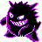
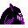

#094
Gengar
GhostPoison
Under a full moon, this Pokémon likes to mimic the shadows of people and laugh at their fright
Base stats Total 425
HP60
Attack65
Defense60
Speed110
Special130
Details
- Species
- Shadow
- Height
- 4'11"
- Weight
- 89.0 lb
- Catch rate
- 45
- Base exp
- 190
- Growth
- Medium Slow
Level-up moves
LevelMoveType
StartLickGhost
StartConfuse RayGhost
StartNight ShadeGhost
Lv 14LickGhost
Lv 18HypnosisPsychic
Lv 22Confuse RayGhost
Lv 28Night ShadeGhost
Lv 36ThunderboltElectric
Lv 40Shadow BallGhost
Lv 46Dream EaterPsychic
Evolution
Evolves from Haunter
Where to find
TM / HM
TM01 Mega PunchTM05 Mega KickTM06 ToxicTM07 Shadow BallTM08 Body SlamTM09 Take DownTM10 Double-EdgeTM15 Hyper BeamTM17 SubmissionTM18 CounterTM19 Seismic TossTM21 Mega DrainTM24 ThunderboltTM25 ThunderTM29 PsychicTM31 MimicTM32 Double TeamTM34 BideTM35 MetronomeTM36 SelfdestructTM40 Sludge BombTM42 Dream EaterTM44 RestTM45 Thunder WaveTM46 PsywaveTM47 ExplosionTM50 SubstituteHM04 Strength